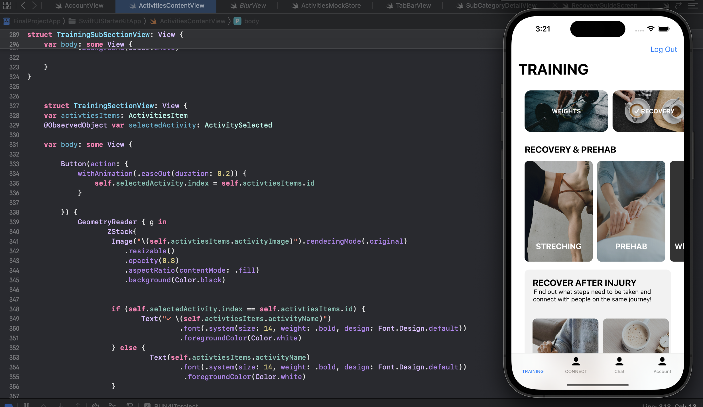

Blockchain + AI Fraud Detection (End-to-End)
Multi-model fraud detection pipeline using traditional ML + GNNs + a custom Transformer, served via FastAPI, with blockchain logging via a Solidity FraudFlagger contract.
View Report ↓MSc Artificial Intelligence graduate with experience building end-to-end ML pipelines, serving models via FastAPI, and logging fraud detections on-chain with Blockchain and smart contracts.
MSc Artificial Intelligence • BSc (Hons) ITMB Computer Science with Business
A highly motivated and hard-working MSc Artificial Intelligence recent graduate with a deep passion for AI and Machine Learning and previous professional experience, looking for a graduate position. Constantly growing and learning, always striving to achieve the best results and producing high-quality work. Driven by curiosity, quick to adapt to new settings, with strong communication, teamwork, and analytical skills. Speaking a few languages, with excellent time management and problem-solving abilities. Seeking a challenging role to further develop my technical and professional skills while contributing to the growth and success of a dynamic organisation.
Multi-model fraud detection pipeline using traditional ML + GNNs + a custom Transformer, served via FastAPI, with blockchain logging via a Solidity FraudFlagger contract.
View Report ↓Deployed contract with Hardhat. FastAPI triggers flagFraud() and a React + MetaMask UI reads events and displays a live fraud log table.
Add your demo link →This project presents a MATLAB-based system that employs conventional computer vision techniques, to distinguish malignant melanomas from benign skin lesion.
View Report ↓The project develops predictive models to assess cardiovascular disease risk using clinical health data. It includes data cleaning, exploratory analysis, feature engineering, and evaluation of machine learning models.
View Jupyter Notebook pdf file ↓This project developed an autonomous mobile robot control system using Python, combining reactive behaviours and high-level navigation strategies. Braitenberg-inspired behaviours were implemented to demonstrate sensor-driven responses. A person-following behaviour enabled the robot to track and follow a human while maintaining a safe distance and avoiding obstacles. The system used an Intel RealSense depth camera and NVIDIA Jetson Nano for showcasing intelligent navigation and safe human-robot interaction.
GitHub → View Report ↓Financial fraud remains a persistent global threat, especially in decentralised finance (DeFi). Blockchain technology provides immutability and transparency, while artificial intelligence (AI) offers predictive capabilities to identify anomalies in real time. This thesis combines these two technologies to develop a full-stack fraud detection pipeline that couples high-recall AI models with blockchain-based fraud logging for secure, auditable monitoring.
The project develops and evaluates multiple AI models, including ensemble learners (Random Forest, XGBoost, LightGBM, CatBoost), graph-based models (Graph Convolutional Networks, GraphSAGE, Graph Attention Networks), and a custom Transformer architecture. Trained on chosen PaySim dataset, the models were recalloptimised to prioritise the detection of fraudulent transactions, using evaluation metrics such as Accuracy, Precision, Recall, F1, and AUC. Model were later enhanced through threshold adjustments, SHAP and fraud-score visualisations.
A FastAPI was deployed for backend ensuring training inference parity via feature scaling, class imbalance handling. Fraud predictions were logged both locally in SQLite for initial testing and ultimately on-chain via a Solidity smart contract deployed with Hardhat and integrated using web3.py. A React with MetaMask frontend enabled secure wallet interaction and real-time visualisation of fraud logs and model outputs.
Robustness was tested using two complementary approaches: rule-based intrusion injections and chosen generative adversarial models, which produced realistic synthetic fraud patterns for adversarial evaluation. These methods highlighted detection gaps and informed threshold adjustments for future improvements. The thesis also investigates various issues such as system bottlenecks, including synchronous blockchain calls, stability run issues in full-dataset with over 6 million inputs, highlighting the importance of consistent scaling and validation. A few solutions were proposed. Each section will be explained in details later in this report
If your browser blocks the preview, you can download the PDF.
MATLAB • Segmentation • Feature Extraction • Classification
This project presents a MATLAB-based system that employs conventional computer vision techniques to distinguish malignant melanomas from benign skin lesions.
The workflow includes image preprocessing, lesion segmentation, feature extraction (shape, color, and texture descriptors), and rule-based / classical classification to support automated screening.
The project evaluates the effectiveness of the extracted features and reports results using appropriate performance measures (e.g., accuracy, sensitivity, specificity) alongside visual examples of intermediate processing steps.
If your browser blocks the preview, you can download the PDF.
This project focuses on developing predictive machine learning models to assess the risk of cardiovascular disease using clinical health data. Cardiovascular disease remains one of the leading causes of mortality worldwide, making early detection and risk prediction essential for preventive healthcare and medical decision support.
The project implements a complete machine learning pipeline. It begins with data cleaning and preprocessing, where missing values, inconsistencies, and potential outliers are handled to ensure data quality.
Exploratory data analysis and visualization techniques are applied to understand data distributions, relationships between features, and patterns associated with cardiovascular risk.
Multiple machine learning models are developed and evaluated using metrics such as accuracy, precision, recall, F1-score, and ROC-AUC.
This work demonstrates how machine learning can support healthcare decision-making by providing data-driven risk assessment tools for early cardiovascular disease detection.
If your browser blocks the preview, you can download the PDF.
The mobile application solution aimed to develop a comprehensive prototype of a mobile app tailored to professional athletes and runners, enabling them to optimise their training, improve performance, and enhance their network within the running community. Project is aligned with the client's precise requirements, with the primary objective of enhancing time and goal management, as well as overall efficiency. The report covers the application design, management technique used throughout the development process, project’s structure, the implementation as well as the challenges and issues experienced while working on the project. The project focused on developing the initial design of a mobile application using Figma, which enabled the transformation of static design concepts into interactive prototypes. In addition to the design stage, more advanced development features were explored using Xcode, an integrated development environment (IDE) created by Apple for building applications across its platforms. As Figma cannot fully replicate real application performance, advanced UI interactions, or responsiveness, , further development and testing in Xcode were required to accurately evaluate the final application's performance and user experience.

If your browser blocks the preview, you can download the PDF .
This report explores the integrated behavioural and following behaviour mechanisms of a robot, focusing on how these were designed, implemented, and analysed within the scope of this project. The primary aim is to provide a comprehensive explanation of the robot’s actions and responses, such as aggression, fear, love, and curiosity, alongside its ability to follow a chosen person. In order to achieve that, both object as well as colour detection will be implemented.
To establish a structured approach, the first chapter begins by detailing the project’s overall organisation, including the methodology employed, project management tools utilised, and the work breakdown structure (WBS) that guided our team throughout the development process. The next chapters describe the project’s technical aspects. They outline how particular behaviours were designed, evaluated, and tested. Comprehensive explanations of the programming code, flowcharts, and class designs are provided to illustrate the mechanisms enabling the robot’s behaviour. By providing both organisational and technical perspectives, this report offers a complete, well-rounded overview of the project, from start to completion. Project was completed as part of an MSc Artificial Intelligence module at university, delivered as a team project.
If your browser blocks the preview, you can download the PDF.
Want to collaborate or discuss an opportunity?